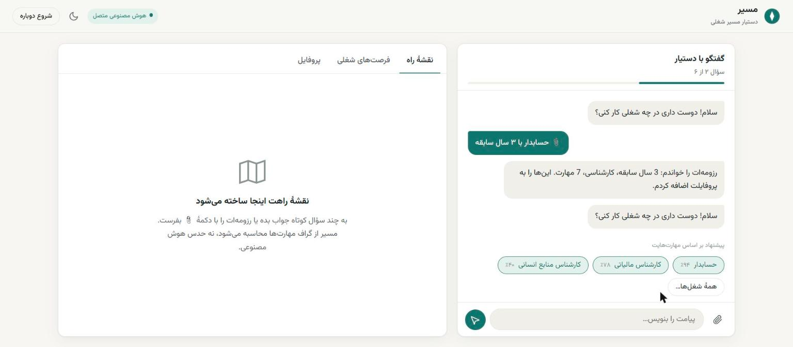

از یک گفتگوی کوتاه یا یک رزومه، تا نقشهٔ راه یادگیری قدمبهقدم و فرصتهای شغلی واقعی، با دلیلِ هر پیشنهاد.
هکاتون بوتکمپ یادگیری ماشین دانشکدهٔ رهنما · RC-MLB-HACK-2026-01 · سارا، همو، امین، جواد، مهدی
مسئله
مهارتهای لازم برای یک شغل، ترتیب یادگیری و پیشنیازها برای تازهکارها روشن نیست.
آگهیها در چند سایت پخشاند و معلوم نیست کدام واقعاً با رزومه میخواند و چه کم است.
مدلهای زبانی روان حرف میزنند اما مهارت، لینک و ترتیبِ ساختگی هم میسازند.
هدف ما: توان گفتگوی مدل زبانی + دانش ساختیافته و قطعی + کیفیت رتبهبندیِ اندازهگیریشده.
راهحل در یک نگاه
حداکثر ۶ سؤال با گزینههای آماده؛ نقش هدف، سطح و مهارتهای عملی.
PDF یا Word، فارسی یا انگلیسی؛ مهارتها، سابقه و تحصیلات خودکار پر میشوند.
فقط شناسههای معتبرِ تاکسونومی؛ قابل اصلاح با یک جمله: «من اکسل بلد نیستم».
گراف پیشنیازها با منابع آموزشی بررسیشده.
۱۰ آگهی واقعی با امتیاز، مهارتهای مشترک و کمبودها.

معماری
۶ سؤال، شاهدمحور
پروفایل B-02
Qdrant + FastEmbed
DAG، سه سطح
ترتیب مطالعه + منابع
۴ مؤلفهٔ شفاف
روی هر بخش بزن تا جزئیاتش را ببینی.
پایپلاین
■ مولد (مدل زبانی، خروجی اعتبارسنجیشده) ■ قطعی (کد قابل آزمون). روی هر مرحله بزن.
گراف مهارتها
خروجی واقعی موتور برای «تحلیلگر داده · جونیور» که فقط با اکسل کار کرده:
مفاهیم نقش + همهٔ پیشنیازهایشان
آنچه کاربر عملاً بلد است حذف میشود
هیچ قدمی پیش از پیشنیازش نمیآید
گفتگو
رزومه ← فرصتهای شغلی
دانستنِ یک مهارت یعنی دانستنِ پیشنیازهایش هم (جنگو ⇐ پایتون).
ارزیابی (بخش ۱۰٫۲)
۳ رزومهٔ ساختگی، هر کدام در برابر ۲۶ آگهی برچسبخورده (۰، ۱، ۲).
بازیابی Qdrant در ۴۰ آگهیِ اول، ۱۰۰٪، ۱۰۰٪ و ۹۰٪ آگهیهای مرتبط را میآورد. با ۳ رزومه تفاوت دو نسخهٔ ترکیبی در حد نوسان است؛ برچسبها پیشنویساند.
چطور ساخته شد
آزمون خودکار، همه موفق
فرمان اجرا: docker compose up
رزومه یا گفتگوی ذخیرهشده روی دیسک
توکن در هر نوبت گفتگو؛ مصرف در برنامه نمایش داده میشود
سارا: آگهیها · همو: تاکسونومی و گراف · امین: گفتگو · جواد: خواندن رزومه · مهدی: منابع آموزشی و یکپارچهسازی. از دستیار کدنویسی هوش مصنوعی (Claude Code) هم استفاده شد.
جمعبندی
نقش در ۵ حوزه
مهارت با پیشنیاز
منبع آموزشی بررسیشده
آگهی واقعی
گفتگو ← رزومه ← نقشهٔ راه ← فرصتهای شغلی ← نقشهٔ راهِ یک آگهی
http://localhost:8000
ممنون از توجه شما 🌱